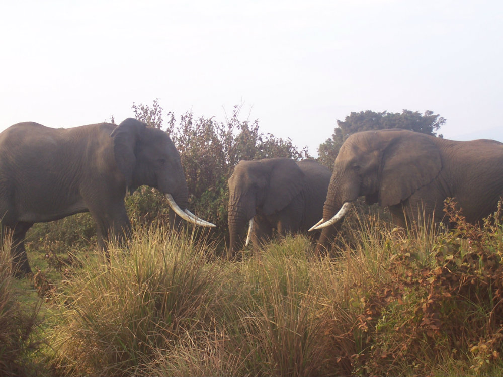
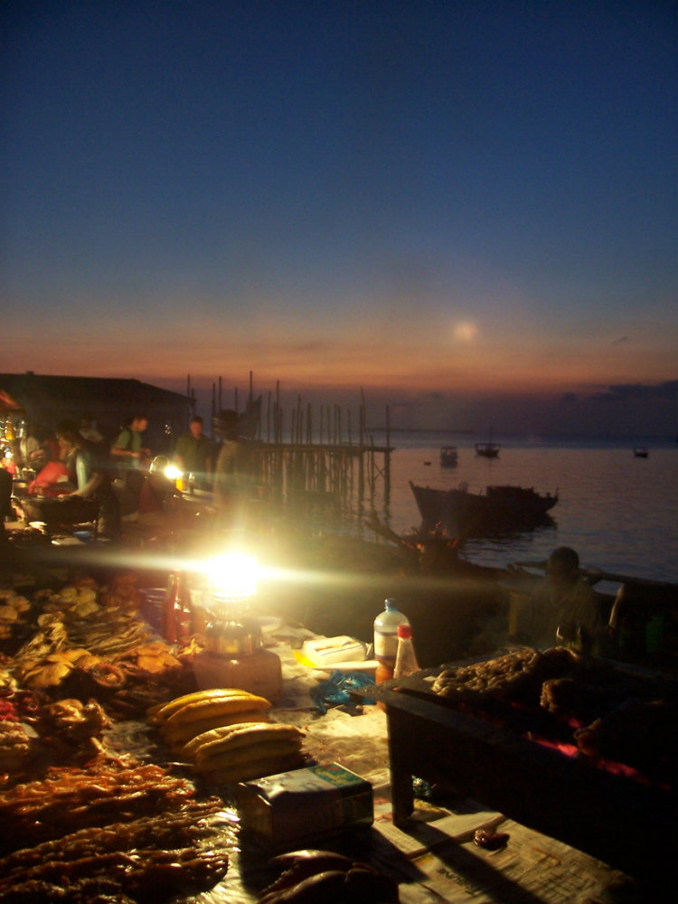
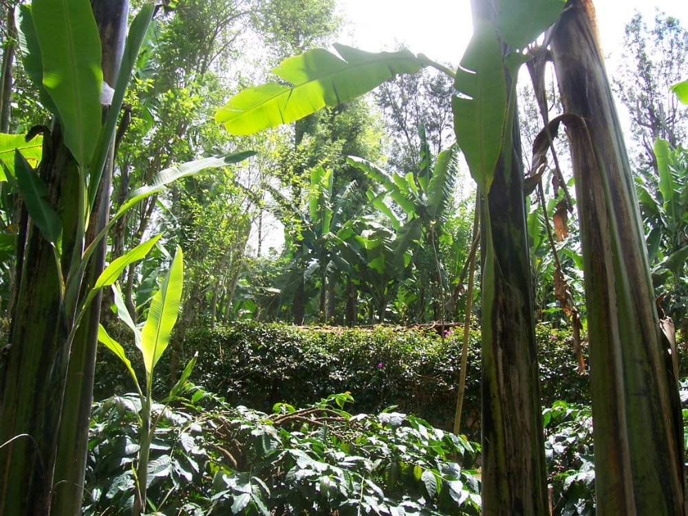
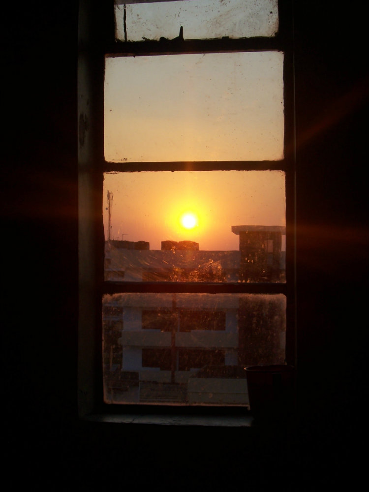
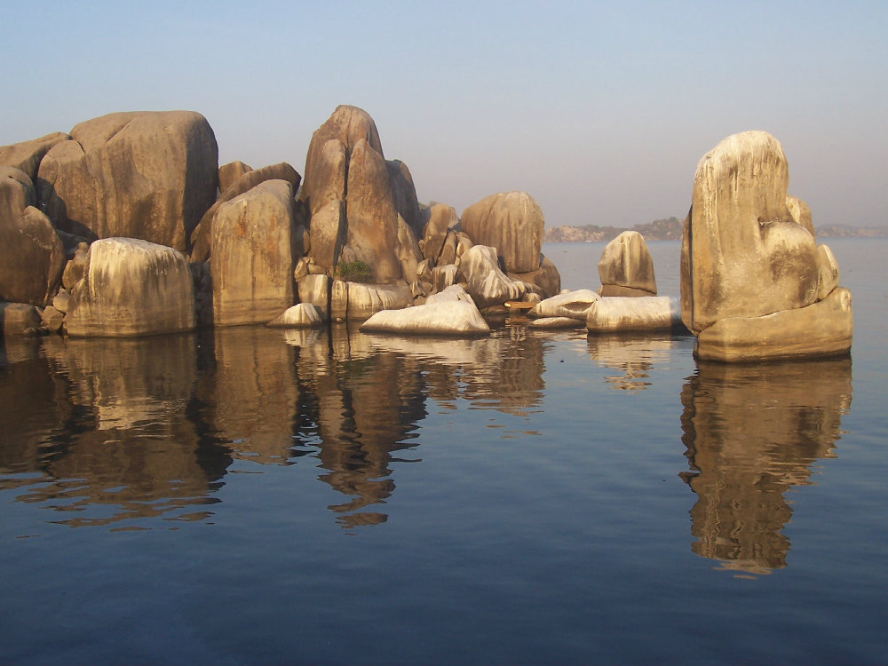

My Trip
In 2007, I had the opportunity to study in the country of Tanzania in East Africa. It is a beautiful country and these few photos are representative of my time there. I hope you enjoy!
The Photos
- Elephants
- These elephants were having a bit of a tiff on the edge of Ngorogoro Crater
- 
- Zanzibar
- This fish market at Forodhani Gardens on Zanzibar has the best baracuda skewers.
- 
- Coffee Shamba
- TThe coffee farm also grew bananas to provide shade for the coffee and enrich the soil.
- 
- Mwanza
- A sunset over the city of Mwanza.
- 
- Lake Victoria
- A stunning assortment of rocks on Lake Victoria.
- 